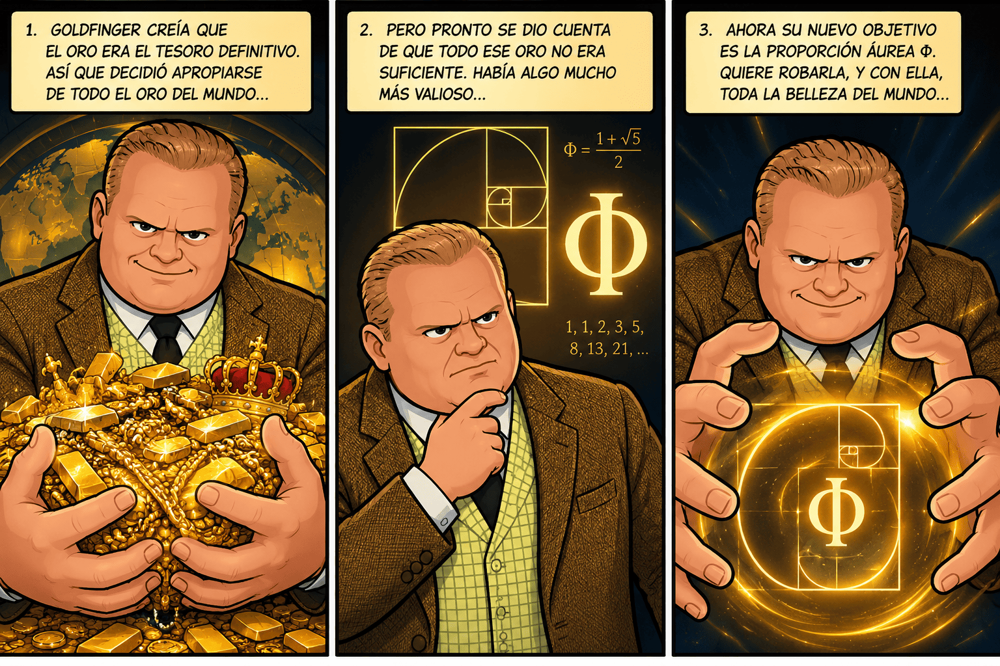
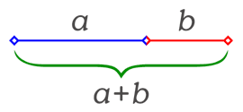
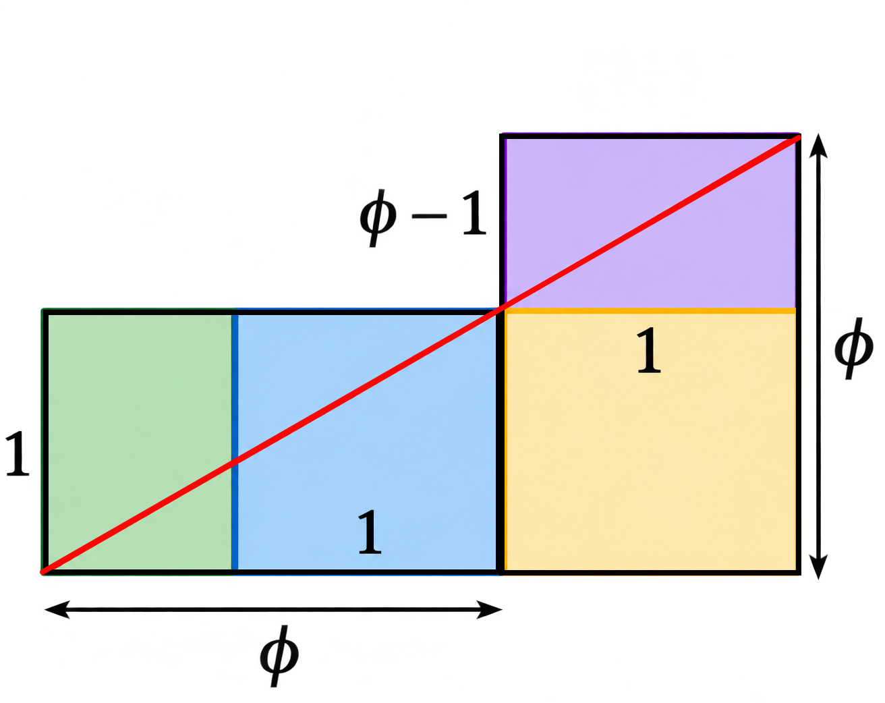
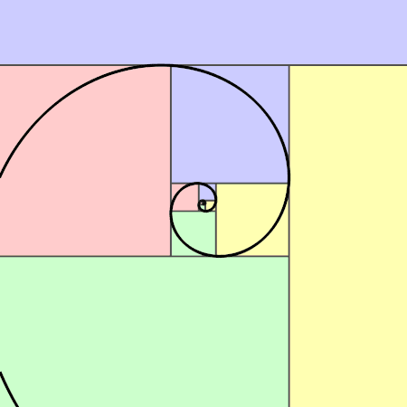
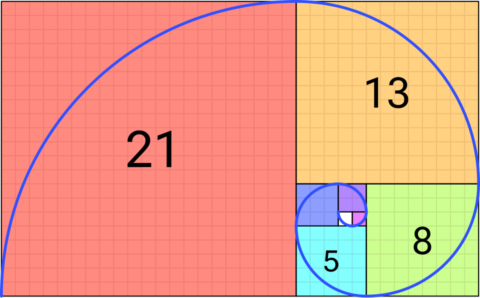

FASE 1. MOTIVAR - Expediente ultrasecreto: Goldfinger ya no quiere oro
Comunicado urgente del agente 00Φ
Agentes:
Lo que voy a contaros supera cualquier operación anterior. Hemos interceptado una comunicación de Auric Goldfinger y, por primera vez en mi carrera, creo que estamos ante un enemigo que ha perdido completamente la razón.
Durante años ha soñado con robar Fort Knox, apoderarse de las reservas de oro de los bancos centrales y vaciar las cajas fuertes más protegidas del planeta llenas de oro. Pero ahora considera que todo ese oro es insignificante.
Goldfinger ha descubierto algo que, según él, vale mucho más que todo el oro del mundo: la proporción áurea.
Su nuevo e irracional plan es apropiarse de ella y borrar las pruebas de su presencia en el arte, la arquitectura, el diseño y la naturaleza. Quiere que la humanidad olvide la relación entre el número Φ (Phi), las formas geométricas y determinados patrones naturales. Sueña con convertirse en el único propietario de la belleza matemática.
Su razonamiento es tan irracional como peligroso: si consigue controlar aquello que tantas personas asocian con la armonía y las proporciones, podrá vender al mundo la idea de que la belleza le pertenece.
Pero ha cometido un error.
No sabe que el agente Fibonacci, código 00Φ, lleva años investigando sus movimientos. Y yo tampoco pienso dejar que se salga con la suya.
Necesito a los mejores equipos de jóvenes agentes matemáticos. Necesito vuestra inteligencia, vuestra creatividad y, sobre todo, vuestra capacidad para detectar una mentira escondida detrás de una imagen espectacular.
Firmado: Fibonacci, agente 00Φ.


La idea genial de 00Φ: construir una trampa que parezca un museo
Goldfinger espera encontrar objetos valiosos, obras de arte y secretos matemáticos dispersos por todo el mundo. Nunca sospecharía que las agencias internacionales decidieran reunir una selección de evidencias en un lugar aparentemente inofensivo: el museo matemático de un instituto.
El plan es brillante por tres razones:
- El museo reunirá infografías sobre obras artísticas y elementos naturales relacionados con la proporción áurea y Fibonacci.
- Cada pieza estará acompañada de explicaciones, medidas, cálculos y audioguías. Goldfinger creerá que ha encontrado la colección que buscaba.
- Una vez que acuda a robarla, la exposición se convertirá en el escenario de una operación coordinada para identificarlo y detenerlo.
Pero hay una condición: si el museo contiene afirmaciones falsas o imágenes engañosas, Goldfinger podría descubrir la trampa. Por eso, cada equipo deberá aportar una pieza rigurosa y bien documentada.
La misión del alumnado: investigar una obra de arte o un elemento natural, demostrar qué relación matemática presenta realmente y convertirlo en una de las piezas del museo.
FASE 2. ACTIVAR - Código rojo: las organizaciones internacionales intentan recordar el número Φ (Phi)
Mensaje interceptado de Moneypenny, enlace internacional de la operación:
Agentes, tenemos un problema. Goldfinger ha comenzado a borrar las referencias matemáticas de los archivos que hemos recuperado. Algunas agencias todavía recuerdan el código Φ (Phi), pero necesitamos reactivar vuestros conocimientos antes de que desaparezcan las últimas pistas.
Vuestra primera misión consiste en ver dos grabaciones recuperadas de los archivos de la agencia. Prestad atención: contienen información que necesitaréis para superar el entrenamiento matemático y preparar el museo-trampa.

Encargo 1. Recuperar los conocimientos perdidos
Visualizad los siguientes vídeos de Derivando.
Encargo 2. Informe urgente para la agencia
Mientras veis los vídeos, tomad notas y responded en vuestro cuaderno:
- ¿Cómo se obtiene cada término de la sucesión de Fibonacci?
- ¿Cuáles son sus primeros diez términos?
- ¿Qué número representa la letra griega \(\Phi\)?
- ¿Qué sucede cuando dividimos un término de Fibonacci entre el anterior?
- ¿Qué relación existe entre Fibonacci y la proporción áurea?
- ¿Qué descubrimiento de los vídeos os ha sorprendido más?
Ejemplo de informe:
La sucesión comienza con \(1,1,2,3,5,8,\ldots\). Cada término, a partir del tercero, se obtiene sumando los dos anteriores. Los cocientes entre términos consecutivos se aproximan al número áureo, cuyo valor es aproximadamente 1'618034.
Producto de esta fase: un breve informe individual con las respuestas. No es necesario copiar todo lo que dicen los vídeos; debéis seleccionar las ideas matemáticas importantes.
Si nos ha costado enterarnos de qué van los vídeos, o directamente no nos hemos enterado... ¡No nos agobiamos!, pero vamos a esforzarnos haciendo un último intento y viendo el siguiente vídeo:
Los Expedientes Fibonacci: La Matemática Áurea (serie audiodescrita en 4 partes)
Qué es la serie de Fibonacci y qué tiene que ver con el número áureo
Lectura facilitada
1. Introducción: El código de la naturaleza
La serie de Fibonacci es una de las secuencias numéricas más famosas de la historia. Se le conoce como “el código secreto de la naturaleza” o la “secuencia divina”, ya que aparece repetidamente en estructuras naturales como los pétalos de un girasol o la cáscara de una piña.
Aparece reflejada en obras populares como la película o libro El código Da Vinci, y guarda una estrecha relación con el número áureo (o proporción divina).
2. El origen y el problema de los conejos
Leonardo de Pisa, conocido como Fibonacci, fue un matemático italiano que en el año 1202 escribió el libro Liber abbaci (“Libro del cálculo”). En esta obra presentó un problema práctico sobre la reproducción de conejos:
El acertijo: Se parte de una pareja de conejos recién nacidos. Tardan dos meses en madurar y, a partir de ese momento, tienen un par de crías (un macho y una hembra) cada mes. Asumiendo que ningún conejo muere, ¿cuántos pares de conejos hay al cabo de un año?
El cálculo mes a mes:
- Mes 1: 1 par (inmaduro).
- Mes 2: 1 par (adulto).
- Mes 3: 2 pares (la primera pareja se reproduce).
- Mes 4: 3 pares.
- Mes 5: 5 pares.
- Mes 12: 377 pares.
La regla para avanzar en la serie es sumar los dos números anteriores (por ejemplo: \(5 + 8 = 13\), \(8 + 13 = 21\)). Al mes 13, la cantidad de parejas ascendería a \(610\) (\(233 + 377\)).
3. Mitos y verdades sobre la secuencia
Aunque la serie se popularizó en el siglo XIX al recibir el nombre de Fibonacci, existen dos grandes aclaraciones sobre su origen y alcance:
No fue inventada por Fibonacci: El registro más antiguo conocido data de entre los años 450 y 200 a. C., en un tratado de métrica del matemático indio Pingala.
No es una regla universal en la naturaleza: Aunque aparece en patrones de crecimiento de plantas (los lirios tienen 3 pétalos, las prímulas 5, los delfinios 8, la hierba de Santiago 13, la achicoria 21 y los girasoles combinan filas de 21, 34, 55, 89, 144 y 233), no aplica a todas las especies ni rige a la naturaleza de forma absoluta.
4. La conexión con el número áureo
Existe un vínculo matemático directo entre la serie de Fibonacci y el número áureo:
Al dividir cualquier número de la secuencia entre el anterior, el resultado se aproxima cada vez más a \(1{,}6180339887\dots\) (representado por la letra griega \(\Phi\)).
Aunque culturalmente se afirma que la proporción áurea resulta naturalmente placentera a la vista y está presente en obras como el Partenón o La última cena de Da Vinci, el matemático Keith Devlin señala que esto tampoco es universal. Los seres humanos simplemente tendemos a reconocer patrones e ignorar lo que los contradice.
5. El verdadero legado de Fibonacci
El mérito principal de Fibonacci no fue la secuencia en sí, sino popularizar el sistema numérico indoarábigo en Europa. Gran parte del Liber abbaci se dedicó a enseñar lo fundamental: escribir las cifras del 0 al 9 y realizar operaciones básicas (suma, resta, multiplicación y división).
Al desplazar el uso del sistema romano y el cálculo manual con ábacos o dedos, Fibonacci ayudó a impulsar el fin de la Edad Media y la modernización del comercio y la ciencia en Europa.
La sucesión de Fibonacci y la razón aúrea
Lectura facilitada
1. Introducción a la sucesión de Fibonacci
Fibonacci es un matemático famoso por su conocida sucesión. La sucesión comienza con el número 1, el segundo número es también un 1, y cada término siguiente se obtiene sumando los dos anteriores (1, 1, 2, 3, 5, etc.).
2. Propiedades de la sucesión y presencia en la naturaleza
Cualquier número entero se puede representar como la suma de números de Fibonacci distintos.
Uno de cada tres términos es par, uno de cada cuatro es múltiplo de tres y uno de cada cinco es múltiplo de cinco.
El máximo común divisor de dos números de Fibonacci cualesquiera es siempre otro número de Fibonacci.
La suma infinita de los números de Fibonacci divididos por las potencias de 10 (\(\frac{F_n}{10^n}\)) da exactamente 10/89.
Aparecen representados en el Triángulo de Pascal y en patrones de la naturaleza como las ramas de los árboles, las escamas de las piñas, las flores de la alcachofa y el árbol genealógico de las abejas (un zángano tiene 1 madre, 2 abuelos, 3 bisabuelos, 5 tatarabuelos, 8 tatatarabuelos, etc.).
3. La Proporción Áurea (\(\phi\))
La razón entre dos partes de un segmento (\(A\) y \(B\)) es áurea cuando la relación entre la parte mayor (\(A\)) y la menor (\(B\)) es igual a la relación entre el total (\(A+B\)) y la parte mayor (\(A\)). Al definir esta relación como \(\phi\) (Phi), resulta la ecuación \(\phi = 1 + \frac{1}{\phi}\), equivalente a \(\phi^2 - \phi - 1 = 0\). La solución positiva a esta ecuación cuadrática da el valor exacto de la razón áurea:
\(\phi = \frac{1 + \sqrt{5}}{2}\).
4. Conexión entre Fibonacci y la Razón Áurea
Al dividir dos números consecutivos de la sucesión de Fibonacci (\(F_{n+1} / F_n\)), conforme más se avanza en la sucesión, el cociente se aproxima exactamente a \(\phi\).
Es posible calcular el enésimo término de Fibonacci en función de \(\phi\) mediante la fórmula de Binet:
\[F_n = \frac{1}{\sqrt{5}} \left( \phi^n - \left(-\frac{1}{\phi}\right)^n \right)\].
Por lo tanto, la sucesión de Fibonacci y la razón áurea son prácticamente dos formas de expresar el mismo concepto matemático.
Lo que nadie sabe de la sucesión de Fibonacci 🤫
Lectura facilitada
Introducción Los números de Fibonacci son objeto de fetichismo para muchos matemáticos, aficionados y gente en general, pero esta sucesión no deja de dar sorpresas. La sucesión empieza de forma inocente con 1 y 1, y continúa sumando los dos números anteriores: 1, 1, 2, 3, 5, 8, 13, 21, 34, 55, etc.. Es famosa por aparecer de manera recurrente en la naturaleza y por su estrecha relación con la proporción áurea.
1. La revista, la asociación y el congreso de Fibonacci
Existe una publicación científica dedicada exclusivamente a esta sucesión llamada la revista Fibonacci, publicada por la Asociación Fibonacci en Canadá, entidad que además organiza un congreso internacional sobre el tema. La revista acumula cientos de artículos y tablas sobre el tema, y su logotipo incluye estrellas pentagonales entrelazadas vinculadas con la razón áurea.
2. Generalizaciones de la sucesión
- Cambio de números iniciales: Si se inicia la serie con dos números cualquiera en lugar de 1 y 1, la sucesión cambia, pero el cociente entre dos números consecutivos sigue tendiendo hacia la razón áurea.
- Tribonacci, Tetranacci y órdenes superiores: Si se suman los últimos 3 números se obtienen los números tribonacci, con 4 los tetranacci, y en general se pueden sumar los \(k\) números anteriores comenzando con \(k-1\) ceros y un 1.
- Extensión a enteros negativos: La sucesión se puede extender hacia los números negativos haciendo que la posición \(-n\) mantenga el mismo valor que en la posición \(n\), pero alternando el signo negativo en las posiciones pares.
- Extensión a números reales: Aplicando la fórmula de Binet, se construyen funciones para valores pares e impares que se combinan en una función continua \(\text{fib}(x)\), coincidiendo exactamente con los números de Fibonacci para todo número entero.
3. Los polinomios de Fibonacci
Existen los polinomios de Fibonacci, definidos recursivamente como \(F_0(x) = 0\), \(F_1(x) = 1\) y \(F_n(x) = x \cdot F_{n-1}(x) + F_{n-2}(x)\). Se utilizan en combinatoria y tienen la propiedad de que, al evaluarse en \(x = 1\), dan exactamente el número de Fibonacci correspondiente.
4. Los números de Lucas
Son una variante construida con la misma regla de suma pero comenzando en 2 y 1: 2, 1, 3, 4, 7, 11, 18, 29, 47, 76, 123.... Tienen aplicaciones destacadas en combinatoria y guardan una relación aún más íntima con la proporción áurea que los propios números de Fibonacci.
5. Solo existen dos cuadrados perfectos en la sucesión
Los únicos números en toda la sucesión de Fibonacci que son cuadrados perfectos son el 1 (\(1^2\)) y el 144 (\(12^2\)), además del 0 si se incluye en la serie. En 1964, el matemático J. H. E. Cohn demostró rigurosamente que entre los infinitos números de Fibonacci no existe ningún otro cuadrado perfecto.
Bonus Track: La gran pregunta sin resolver Aunque existen números de Fibonacci que son primos (como el 2, 3, 5 o 13), en la actualidad nadie en el mundo sabe si existe un número finito o infinito de primos de Fibonacci. Al finalizar el vídeo, se presenta el libro Invitación al aprendizaje, enfocado en cómo la ciencia explica los mecanismos con los que aprendemos.
LA SECUENCIA FIBONACCI ¿LA CLAVE DE LA VIDA?
Lectura facilitada
1. ¿Qué es la secuencia de Fibonacci y qué mitos existen?
- El mito: A menudo se exagera su trascendencia o se le atribuyen explicaciones místicas, considerándola una leyenda urbana o la "secuencia de la vida".
- La realidad: Es una serie numérica muy relevante dentro de las matemáticas que posee propiedades geométricas interesantes.
2. ¿Cómo funciona la secuencia?
- Origen: Surgió como un problema matemático para representar la rapidez con la que crece una población de conejos.
- La regla básica: Cada cifra de la serie se calcula sumando los dos números anteriores.
- La Progresión: La secuencia comienza con 1, 1, 2, 3, 5, 8... y continúa acumulando la suma de los valores previos.
3. La relación con el Número Áureo
- División de términos: Al dividir un número de la secuencia entre el que le precede, el resultado se aproxima de forma progresiva al número áureo (phi).
- Geometría y espirales: Esta proporción está vinculada con la geometría de rectángulos que se prolongan para formar una espiral.
4. Optimización en la naturaleza
- Patrones vegetales: En las piñas, el número de espirales existentes corresponde a una cifra de la secuencia de Fibonacci.
- Evolución: La presencia de las matemáticas en los seres vivos no obedece a magia, sino a que la evolución tiende a optimizar espacio, energía y recursos.
- Otros ejemplos de eficiencia: Las abejas fabrican panales de forma hexagonal porque es la figura geométrica que mejor aprovecha el espacio disponible.
5. Curiosidades del mundo celular y animal
- Comportamiento complejo: Se destacan fenómenos como las migraciones de las aves sin necesidad de mapas o la coordinación social en colmenas y hormigueros.
- Base biológica: Todos los seres vivos funcionan mediante reacciones químicas celulares e impulsos eléctricos en las neuronas.
- Insectos: Se menciona la precisión con la que insectos como las moscas orientan su vuelo, así como los motivos por los que los mosquitos pican preferentemente a ciertas personas debido al olor corporal o al grosor de la piel.
FASE 3. EXPLORAR - El laboratorio de Fibonacci: necesitamos descifrar el código
Comunicación de 00Φ:
Bien, agentes. Hemos recuperado el código, pero todavía no sabemos utilizarlo con suficiente precisión. Goldfinger conoce las imágenes espectaculares; nosotros debemos conocer las matemáticas que hay detrás.
Necesito que dominéis dos herramientas: la sucesión recurrente de Fibonacci y la relación entre sus términos y el número Φ (Phi). Sin ellas, nuestras pruebas no tendrán credibilidad científica.
Encargo 3. Descifrad la sucesión recurrente
La sucesión de Fibonacci se define mediante las siguientes condiciones:
\(F_1=1,\qquad F_2=1\)
\(F_n=F_{n-1}+F_{n-2} \quad(n\geq3) \)
Esta última expresión es una fórmula recurrente: permite obtener cada término utilizando los dos anteriores.
Vuestra misión:
- Calculad los doce primeros términos de la sucesión.
- Indicad qué dos términos habéis utilizado para obtener cada término nuevo.
- Calculad los cocientes \(F_3/F_2\), \(F_4/F_3\), \(F_5/F_4\), y así sucesivamente, hasta \(F_{12}/F_{11}\).
- Comparad los resultados con \(1{,}618034\).
- Escribid una conclusión sobre la tendencia de los cocientes.
Podéis organizar los resultados en esta tabla:
| \(n\) | \(F_n\) | Cociente \(F_n/F_{n-1}\) |
| 1 | 1 | — |
| 2 | 1 | 1 |
| 3 | 2 | 2 |
| 4 | 3 | ... |
| 5 | 5 | ... |
| 6 | 8 | ... |
| 7 | 13 | ... |
| 8 | 21 | ... |
| 9 | 34 | ... |
| 10 | 55 | ... |
| 11 | 89 | ... |
| 12 | 144 | ... |
Conclusión que debéis investigar: ¿por qué el cociente no es siempre igual a Φ (Phi), aunque se aproxime cada vez más a él?
Encargo 4. La fórmula general: el código definitivo de Φ (Phi)
La agencia ha recuperado una fórmula que permite calcular directamente cualquier término de Fibonacci sin tener que sumar todos los anteriores. Se conoce como fórmula de Binet:
\(F_n=\dfrac{\Phi^n-(1-\Phi)^n}{\sqrt5}\)
donde
\( \Phi=\dfrac{1+\sqrt5}{2} \)
Vuestra misión:
- Calculad el valor aproximado de \(\Phi\).
- Comprobad la fórmula para \(n=1\) y \(n=2\).
- Utilizad la calculadora para comprobar el resultado cuando \(n=5\).
- Comparad el resultado con el quinto término de la sucesión recurrente.
- Explicad por qué resulta útil tener una fórmula general.
Recordad que la expresión \(1-\Phi\) es negativa. En potencias elevadas, ese término se hace cada vez más pequeño en valor absoluto, por lo que la fórmula se aproxima a:
\(F_n\approx\dfrac{\Phi^n}{\sqrt5}\)
Pista del agente 00Φ: no confundáis una fórmula recurrente, que necesita términos anteriores, con una fórmula general, que permite calcular directamente un término a partir de su posición.
Producto de esta fase: la tabla de Fibonacci, los cocientes calculados y la comprobación de la fórmula general. Este material os servirá como archivo matemático para vuestro trabajo final.
¿De donde viene la fórmula del término general de la sucesión de Fibonacci?
El término general de la sucesión de Fibonacci se puede calcular mediante la fórmula de Binet.
1. Sucesión de Fibonacci
La sucesión es:
\( 0,\ 1,\ 1,\ 2,\ 3,\ 5,\ 8,\ 13,\ 21,\ldots \)
Cada término se obtiene sumando los dos anteriores:
\( F_n=F_{n-1}+F_{n-2} \)
con \(F_0=0\) y \(F_1=1\).
2. Calculamos el término general
Buscamos una solución de la forma \(F_n=r^n\). Sustituimos en la recurrencia:
\( r^n=r^{n-1}+r^{n-2} \)
Dividimos entre \(r^{n-2}\):
\( r^2=r+1 \)
Obtenemos la ecuación de segundo grado:
\( r^2-r-1=0 \)
Aplicando la fórmula general:
\( r=\dfrac{1\pm\sqrt{5}}{2} \)
Por tanto, las dos soluciones son:
\( r_1=\dfrac{1+\sqrt5}{2}=\varphi \)
\( r_2=\dfrac{1-\sqrt5}{2} \)
3. Fórmula del término general
Combinando ambas soluciones y utilizando las condiciones iniciales, obtenemos la fórmula de Binet:
TÉRMINO GENERAL DE FIBONACCI
\( \boxed{F_n=\dfrac{1}{\sqrt5} \left[ \left(\dfrac{1+\sqrt5}{2}\right)^n - \left(\dfrac{1-\sqrt5}{2}\right)^n \right]} \)
Esta fórmula permite calcular cualquier término sin tener que calcular todos los anteriores.
Es otra forma de escribir la expresión anteriormente vista:
\(F_n=\dfrac{\Phi^n-(1-\Phi)^n}{\sqrt5}\)
¡Qué fuerte! Son un conjunto de operaciones de números irracionales que al elevarlos a potencias naturales, dan números naturales. ¡Ahora entiendo por qué Auric Goldfinger quiere robar todo lo que tenga que ver con la proporción áurea!
4. Ejemplo: calcular \(F_6\)
Sustituimos \(n=6\):
\( F_6=\frac{1}{\sqrt5} \left[ \left(\frac{1+\sqrt5}{2}\right)^6 - \left(\frac{1-\sqrt5}{2}\right)^6 \right] \)
Al simplificar, obtenemos:
\( \boxed{F_6=8} \)
En efecto, la sucesión es \(0,1,1,2,3,5,8\).
Nota: si tu sucesión empieza por \(F_1=1\) y \(F_2=1\), la misma fórmula funciona usando \(F_n\) con \(n\geq 1\), pero los índices quedan desplazados una posición respecto a la convención que empieza en \(F_0=0\).

FASE 4. ESTRUCTURAR: El secreto de Φ (Phi) y la espiral que no debe caer en manos de Goldfinger
El agente Fibonacci envía un mensaje cifrado a los equipos:
«Agentes, Goldfinger cree que el número áureo es solo una cifra misteriosa. Vamos a demostrarle que es una estructura matemática que puede aparecer escrita de distintas formas. Si descifráis sus equivalencias, podréis reconocer sus huellas y distinguir las pruebas auténticas de las falsas».

Encargo 5. El número Φ (Phi) bajo interrogatorio
Se ha procedido a interrogar al número Φ (Phi) por parte del equipo del MI6 que apoya a 00Φ en su lucha contra Goldfinger, la idea es tener la máxima información de Φ (Phi) para poderlo usar como señuelo de forma segura. Esto es lo que nos ha dicho el número:
1. La división en media y extrema razón

Un segmento está dividido en media y extrema razón cuando la proporción entre el segmento completo y la parte mayor es igual a la proporción entre la parte mayor y la menor.
Si llamamos \(a\) a la parte mayor y \(b\) a la menor, con \(a>b>0\), se cumple:
\( \dfrac{a+b}{a}=\dfrac{a}{b}=\Phi \)
Para encontrar esa proporción, planteamos:
\( \dfrac{a}{b}=\Phi \quad\Longrightarrow\quad a=\Phi b \)
Sustituimos en la primera igualdad:
\( \dfrac{\Phi b+b}{\Phi b}=\Phi \)
Simplificando:
\( \dfrac{\Phi+1}{\Phi}=\Phi \quad\Longrightarrow\quad \Phi^2=\Phi+1 \)
Por tanto, resolviendo la ecuación \(x^2-x-1=0\), obtenemos:
\( \boxed{\Phi=\frac{1+\sqrt5}{2}\approx1{,}618034} \)
La solución negativa se descarta porque una longitud y una proporción positiva no pueden ser negativas.
Reto de agente: si la parte menor mide 10 cm, ¿cuánto mide aproximadamente la parte mayor? ¿Y el segmento completo?
Solución esperada: \(a\approx16{,}18\) cm y \(a+b\approx26{,}18\) cm.
2. La fracción continua infinita
El número áureo también puede expresarse como una fracción continua:
\( \boxed{\Phi=1+\cfrac{1}{1+\cfrac{1}{1+\cfrac{1}{1+\cdots}}}} \)
¿Por qué? Porque cumple la propiedad:
\( \Phi=1+\dfrac{1}{\Phi} \)
Si sustituimos repetidamente \(\Phi\) por \(1+\dfrac1\Phi\), obtenemos la estructura infinita de la fracción.
Podemos aproximarlo truncando la expresión:
\( 1,\quad 1+\dfrac11=2,\quad 1+\dfrac{1}{1+1}=\dfrac32 \)
Al continuar, aparecen aproximaciones como:
\( \dfrac32,\quad\dfrac53,\quad\dfrac85,\quad \dfrac{13}{8},\quad\dfrac{21}{13},\ldots \)
Observa que estas fracciones están relacionadas con términos consecutivos de Fibonacci y que sus valores se acercan a \(1{,}618034\).
Reto de agente: calcula \(\dfrac{21}{13}\) con la calculadora y compárala con \(\Phi\). ¿Qué diferencia observas?
3. Las raíces cuadradas anidadas
Otra representación sorprendente del número áureo es:
\( \boxed{\Phi=\sqrt{1+\sqrt{1+\sqrt{1+\sqrt{1+\cdots}}}}} \)
Esta expresión se interpreta como una raíz cuadrada que contiene otra raíz, que contiene otra, y así sucesivamente.
Para comprender la idea, llamemos \(x\) al valor de la expresión infinita. Como la estructura se repite dentro de la raíz:
\( x=\sqrt{1+x} \)
Elevando al cuadrado:
\( x^2=1+x \)
Así llegamos de nuevo a la ecuación característica del número áureo:
\( x^2-x-1=0 \)
Su solución positiva es:
\( \boxed{x=\frac{1+\sqrt5}{2}=\Phi} \)
Reto de agente: explica por qué la expresión de las raíces anidadas conduce a la misma ecuación que la división en media y extrema razón.
Nota docente: las fracciones continuas y las raíces anidadas infinitas se entienden como límites. En 4.º ESO basta con reconocer la estructura y justificar la ecuación asociada, sin exigir una demostración formal de convergencia.
4. El resto de las claves matemáticas
- Valor exacto y aproximado: \(\displaystyle\Phi=\frac{1+\sqrt5}{2}\approx1{,}618034\).
- Propiedad fundamental: \(\Phi^2=\Phi+1\).
- Relación recíproca (surge de dividir la propiedad fundamental toda entre \(\Phi\): \(\displaystyle\Phi=1+\frac1\Phi\).
- Rectángulo áureo: la razón entre el lado mayor y el menor es \(\Phi\).
- Puedo saber si dos rectángulos iguales son áureos si al colocarlos de la siguiente forma, la diagonal del primero continúa en línea recta en el segundo, formando una única línea diagonal.

- Sucesión de Fibonacci: el cociente entre términos consecutivos se aproxima a \(\Phi\), aunque no es igual a él en cada paso se aproxima más y mas.
- Espiral áurea y espiral de Fibonacci: están relacionadas, pero no son exactamente la misma curva. La espiral construida con cuartos de circunferencia sobre cuadrados de Fibonacci es una aproximación a la espiral áurea. Es decir, la espiral áurea se define mediante la proporción áurea, mientras que la espiral de Fibonacci se dibuja con arcos dentro de cuadrados cuyos lados siguen la sucesión de Fibonacci, por lo que se aproxima a la espiral áurea.
|
 Las espirales áureas son auto similares. La forma se repite indefinidamente cuando la ampliamos. |
 |
Reto 6. Dibuja la espiral de Fibonacci
Mensaje de 00Φ:
«Agentes, Goldfinger ha dejado una pista escondida en una espiral. Para descifrarla, tendréis que construirla vosotros mismos. Solo quienes dominen la sucesión de Fibonacci podrán reconstruir su trayectoria. ¡Sacad la regla, el lápiz y una hoja de cuadritos!».
Misión: dibujar una espiral de Fibonacci en una hoja cuadriculada siguiendo estos pasos.
- Calcula la sucesión. Escribe los primeros términos: \(1,1,2,3,5,8,13,\ldots\).
- Construye los cuadrados. En la hoja cuadriculada, dibuja cuadrados con lados de 1, 1, 2, 3, 5, 8 y 13 cuadritos, colocando cada cuadrado junto al anterior, de forma que formen un rectángulo creciente.
- Traza los arcos. En cada cuadrado, dibuja con el compás un cuarto de circunferencia que conecte dos esquinas opuestas del arco, siguiendo siempre el mismo sentido de giro. Los arcos deben enlazarse para formar una espiral continua.
- Identifica la pista. Colorea la espiral, señala las medidas de los lados de los cuadrados y escribe al lado la sucesión de Fibonacci.
- Responde al interrogatorio. En dos o tres frases, explica cómo se relacionan los tamaños de los cuadrados con la sucesión y por qué esta espiral es una aproximación a la espiral áurea, no exactamente la misma curva.
Prueba que debes entregar: la hoja con la construcción completa, los lados de los cuadrados etiquetados y una breve explicación matemática.
Criterios de éxito
- Los cuadrados siguen las medidas de la sucesión de Fibonacci.
- Los cuadrados están colocados de forma contigua y coherente.
- Los arcos forman una espiral continua.
Pista de 00Φ: cada nuevo término de Fibonacci se obtiene sumando los dos anteriores. ¡La geometría también puede guardar secretos matemáticos!
Cierre narrativo de la fase
00Φ envía la última instrucción:
«Ya conocéis las distintas formas de escribir la clave: como proporción geométrica, ecuación, fracción continua y raíz anidada. Pero cuidado, agentes: encontrar una proporción cercana a 1,618 no demuestra por sí solo que un artista o la naturaleza la hayan utilizado deliberadamente. Para atrapar a Goldfinger, necesitaremos cálculos, medidas fiables y fuentes que resistan el interrogatorio».
Así, las propiedades quedan conectadas con la misión del museo-trampa: cada equipo deberá aportar una pieza y una prueba matemática verificable, no limitarse a afirmar que algo es áureo porque lo diga una página web.

FASE 5. APLICAR: La trampa perfecta: construid el museo al que Goldfinger no podrá resistirse
Mensaje urgente de 00Φ:
Agentes, ya sé cómo capturaremos a Goldfinger.
No intentaremos perseguirlo por todo el planeta. Le ofreceremos exactamente lo que busca: un museo que reúna algunas de las obras, formas y patrones más fascinantes relacionados con Phi y Fibonacci.
Cuando descubra la colección, pensará que por fin podrá robar el secreto de la belleza. No se dará cuenta de que cada pieza estará acompañada de una prueba matemática, una explicación y una audioguía. El museo entero será nuestra trampa.
Necesito una pieza de cada equipo. Una obra de arte o un elemento natural. Una investigación real. Una infografía que nadie pueda desmontar con una simple pregunta. Y una audioguía que explique el descubrimiento.
Esta misión la ejecutaréis fuera del aula. No os pediré que construyáis un museo físico enorme: bastará con que cada equipo prepare una pieza digital o imprimible para incorporarla a la exposición colectiva.
El museo se montará con vuestras infografías y sus audioguías. Será una colección irresistible para Goldfinger y, al mismo tiempo, una exposición científica que cualquier visitante pueda comprender.
Encargo 8. Constitución del equipo de agentes
Para que la operación funcione, cada equipo necesita una estructura de mando. Los cuatro puestos deben quedar cubiertos, aunque en los equipos de tres personas se podrán combinar las funciones de Q y Moneypenny.
- M — Jefe o jefa de la misión: Organiza el trabajo, reparte las tareas, controla los plazos y se asegura de que todas las personas participen. No hace todo el trabajo: coordina al equipo.
- Q — Responsable del archivo y las pruebas: Es el secretario o secretaria del equipo. Registra las decisiones, organiza las fuentes, guarda los cálculos y mantiene ordenados los documentos de la investigación.
- Moneypenny — Enlace con el profesorado: Comunica las dudas del equipo al profesor o profesora, transmite las indicaciones recibidas, comprueba los requisitos de entrega y es responsable de entregar el trabajo final dentro del plazo.
- Agente de campo — Responsable de la investigación visual: Busca y analiza imágenes, propone mediciones y comprueba que la infografía representa correctamente los datos. Colabora con Q para verificar la investigación.
Todos los integrantes deben participar en los cálculos, revisar y construir la infografía y comprender la conclusión. Los cargos organizan el trabajo, pero no convierten el proyecto en tareas independientes.
Producto de esta actividad: ficha del equipo con los nombres, los cargos y el canal de comunicación acordado.
Si en tu clase ya tenéis grupos asignados para actividades en grupo, trabajaréis en ese grupo de forma que ya sólo os quedará el reparto de los roles.
Encargo 9. La misión definitiva: una pieza para el museo-trampa
Mensaje de Goldfinger interceptado por la agencia
¡Por fin he encontrado lo que buscaba! Me han informado de que un instituto está reuniendo una colección extraordinaria de proporciones, formas y patrones matemáticos.
Estoy seguro de que sus jóvenes investigadores no sabrán distinguir una verdadera proporción áurea de una simple coincidencia. Cuando llegue el momento, me llevaré toda la colección.
Y entonces, ¡la belleza será mía!
— Auric Goldfinger.

Comunicación inmediata de 00Φ:
¡Perfecto! Ha mordido el anzuelo.
Agentes, ahora debéis preparar vuestra pieza. Cada equipo elegirá una obra de arte o un elemento natural, investigará su relación con la proporción áurea o Fibonacci y elaborará una infografía acompañada de una audioguía.
No hace falta encontrar las dos relaciones en la misma pieza. Podéis investigar la proporción áurea, la sucesión de Fibonacci o ambas, siempre que expliquéis con rigor lo que habéis encontrado.
Vuestro trabajo formará parte del museo que utilizaremos como trampa. Cuanto mejor documentadas estén las piezas, más convincente será la exposición.
El encargo que debéis cumplir
Misión de equipo: «Una pieza, una prueba, una audioguía».
Si se os hace difícil organizarte, una propuesta que te hago es que hagas clic en el botón "Productos intermedios recomendados para construir el producto final" y valoréis seguir los productos intermedios allí propuestos.
Encargo 10. Control de calidad: la revisión de la agencia
Antes de abandonar la sede, cada equipo debe preparar un control de calidad de su misión.
Enunciado
Revisad la propuesta de investigación y responded:
- ¿Hemos elegido una pieza concreta?
- ¿Sabemos qué vamos a medir o contar?
- ¿Podemos explicar cómo se calcula la razón o cómo se identifica el patrón?
- ¿Tenemos una fuente fiable para la información principal?
- ¿Podemos elaborar una imagen que muestre claramente la relación matemática?
- ¿Sabemos qué vamos a explicar en la audioguía?
- ¿Están repartidas las responsabilidades?
- ¿Sabemos qué debe entregar Moneypenny y en qué plazo?
Si alguna respuesta es negativa, corregid el plan antes de abandonar el aula.
La pregunta que puede salvar la operación
Cada equipo debe completar esta frase:
«Nuestra pieza será __________. Investigaremos __________ mediante __________. Si encontramos una relación matemática (tú eliges cuál relacionada con el tema tratado), la mostraremos en la infografía mediante __________. Si no encontramos pruebas suficientes, explicaremos __________».
Ejemplo:
«Nuestra pieza será un girasol. Investigaremos la posible relación entre sus espirales y Fibonacci mediante un recuento en ambos sentidos. Si encontramos un patrón compatible con la sucesión, lo mostraremos en la infografía mediante flechas y números. Si no encontramos pruebas suficientes, explicaremos los resultados reales sin modificarlos».
Producto de este encargo: un plan de trabajo definitivo, aprobado por todos los miembros del equipo.
Como muchas veces realizar una gran tarea puede ser dificultoso, vamos a trocearla en partes, pequeños productos que como piezas de un puzzle encajan y, si los generas todos, poco a poco, tendrás el producto final.
Producto 1. La investigación
Buscad información fiable sobre la pieza elegida. Identificad qué queréis comprobar, seleccionad las medidas o los recuentos necesarios y calculad la relación matemática.
Debéis explicar si habéis encontrado una proporción próxima a Phi, un patrón relacionado con Fibonacci, ambas cosas o ninguna de ellas.
Producto 2. La infografía
Diseñad una infografía clara y atractiva que incluya el título, la imagen de la pieza, las medidas o los recuentos, las operaciones, las anotaciones geométricas, la conclusión y las fuentes.
Un visitante debe poder entender qué habéis investigado y qué habéis demostrado.
Producto 3. La audioguía
Grabad una explicación oral de entre 1 y 2 minutos en la que presentéis la pieza, expliquéis los cálculos y comuniquéis la conclusión.
El audio debe corresponder a la infografía y poder escucharse mediante un enlace o un código QR.
Producto 4. El expediente de pruebas
Entregad un documento breve con la pregunta de investigación, el procedimiento, los cálculos, la conclusión y las fuentes consultadas.
Requisitos obligatorios
- La investigación debe centrarse en una obra de arte o un elemento de la naturaleza.
- Las imágenes deben proceder de fuentes identificables.
- Los cálculos deben ser correctos y estar explicados.
- Las anotaciones de la infografía deben permitir ver qué se ha medido o contado.
- La conclusión debe distinguir entre lo que se ha comprobado y lo que solo se sospecha.
- La audioguía debe durar entre 1 y 2 minutos.
- Todos los integrantes deben colaborar en la investigación y comprender el resultado.
- La infografía y el audio deben estar listos para incorporarse al museo.
Formato de entrega: un archivo de infografía en PDF o imagen, un enlace o archivo de audio y un documento breve con la investigación y las referencias. Moneypenny comprobará que todos los archivos se pueden abrir y que la entrega está completa.
Cómo organizar el trabajo fuera del aula
Para que el proyecto sea realizable, distribuid las tareas entre los integrantes y acordad una fecha interna de revisión.
FASE 6. CONCLUIR/EVALUAR: La última comunicación antes de entrar en territorio enemigo
Transmisión final de 00Φ
Agentes, el tiempo se acaba. Vuestra investigación está en marcha y el museo empieza a tomar forma.
Goldfinger cree que encontrará una colección de imágenes bonitas. No imagina que detrás de cada pieza habrá un equipo capaz de explicar las medidas, justificar los cálculos y detectar las afirmaciones falsas.
Esa será nuestra ventaja. No necesitamos que todas las obras sean áureas ni que todas las espirales sigan Fibonacci. Necesitamos que cada prueba sea honesta y que sepamos explicar qué significa.
La operación continúa fuera del aula. Comprobad que todos conocéis vuestra tarea, que M tiene el plan organizado, que Q conserva las pruebas y que Moneypenny sabe cómo y cuándo se entregará el trabajo.
Enunciado: parte de misión
Antes de terminar la sesión, cada equipo debe comunicar oralmente al profesor, en un máximo de un minuto:
- Qué pieza ha elegido.
- Qué relación matemática va a investigar.
- Qué producto final elaborará.
- Cómo se han repartido las responsabilidades.
- Qué duda necesita resolver antes de continuar.
El profesorado podrá orientar la investigación si la pieza elegida no permite realizar una comprobación matemática razonable.
Informe de resultados: ¿merecemos entrar en la agencia?
La evaluación también forma parte de la historia. Los agentes deben comprobar la calidad de su propio trabajo y valorar la colaboración de sus compañeros antes de que Moneypenny entregue el expediente definitivo.
Autoevaluación del agente
Antes de cerrar tu expediente, reflexiona individualmente sobre tu aprendizaje. Responde con sinceridad y aporta ejemplos concretos.
- ¿Qué he aprendido sobre el número Phi y la sucesión de Fibonacci?
- ¿Qué cálculo o propiedad matemática soy capaz de explicar?
- ¿Qué tarea he realizado para contribuir al museo?
- ¿Qué dificultad he encontrado durante la investigación?
- ¿He comprobado las fuentes y los resultados antes de aceptar una afirmación?
- ¿Qué cambiaría si volviera a realizar la misión?
Ejemplo:
«He aprendido que los cocientes entre términos consecutivos de Fibonacci se aproximan al número áureo. Mi tarea fue comprobar las medidas y revisar la infografía. Al principio acepté una afirmación sin contrastarla, pero después buscamos fuentes adicionales. En otro proyecto comprobaría las dimensiones antes de diseñar la imagen».
Producto que debes entregar: una reflexión individual de unas 100-150 palabras.
Coevaluación: el informe confidencial de M
M necesita conocer cómo ha trabajado cada integrante. Cada agente debe valorar a los demás miembros del equipo a partir de su participación real.
Para cada miembro de tu grupo vas a valorar cada aspecto del 1 al 4:
- Responsabilidad
- No cumple las tareas
- Las cumple algunas veces
- Las cumple habitualmente
- Las cumple y ayuda a organizar
- No cumple las tareas
- Colaboración
- Apenas participa
- Participa de forma irregular
- Colabora de forma habitual
- Favorece la colaboración de todos
- Apenas participa
- Rigor matemático
- No revisa los resultados
- Necesita ayuda frecuente
- Comprueba los resultados
- Comprueba y ayuda a corregir errores
- No revisa los resultados
- Comunicación
- No escucha las propuestas
- Le cuesta aceptar sugerencias
- Escucha y respeta
- Escucha, argumenta y facilita acuerdos
- No escucha las propuestas
Después, completa dos frases:
«Una aportación de este compañero o compañera que ha ayudado a la misión ha sido…».
«Para mejorar en la próxima misión, le recomendaría…».
La coevaluación debe ser respetuosa y basarse en hechos. No se trata de premiar a los amigos ni de castigar los desacuerdos. El profesor contrastará las valoraciones con las evidencias del trabajo.
Producto que debes entregar: una ficha de coevaluación por cada compañero o compañera.
La auditoría final de Moneypenny
Moneypenny debe comprobar que el equipo no deja ninguna prueba sin entregar. Antes de enviar el expediente al profesor, revisará esta lista:
Control final de la operación
- La pieza está identificada y las fuentes son verificables.
- La investigación explica qué se ha medido o contado.
- Los cálculos son correctos y están explicados.
- La infografía muestra las medidas o los patrones investigados.
- La conclusión distingue los resultados de las hipótesis.
- La infografía incluye referencias y créditos de las imágenes.
- La audioguía dura entre 1 y 2 minutos y se escucha correctamente.
- Todos los integrantes han revisado el producto final.
- Cada agente ha completado su autoevaluación y la coevaluación.
- Los archivos se abren correctamente y están listos para su entrega.
Moneypenny será responsable de realizar la entrega, pero todos los integrantes deben asegurarse de que el expediente está completo.
Conozcamos a Fibonacci - el hombre tras la leyenda
Fibonacci: el matemático que descubrió un patrón fascinante
¿Sabías que una sucesión de números puede ayudarnos a investigar patrones matemáticos presentes en la naturaleza? Uno de los matemáticos más conocidos por estudiar una sucesión de este tipo fue Leonardo de Pisa, al que hoy llamamos Fibonacci.
Fibonacci nació alrededor del año 1170 en Pisa, una ciudad de la actual Italia. Cuando era joven, viajó con su padre al norte de África, donde entró en contacto con otras culturas y aprendió nuevas formas de hacer cálculos. Aquella experiencia fue muy importante para su formación, porque descubrió métodos matemáticos que todavía no eran habituales en Europa.
En aquella época, realizar operaciones matemáticas podía resultar complicado. En el año 1202, Fibonacci escribió un libro llamado Liber abaci, que significa «Libro de cálculo». En él explicó cómo utilizar el sistema de numeración indoarábigo, con los dígitos del 0 al 9 y el valor de cada cifra según su posición. Este sistema permitía hacer operaciones de forma más práctica que otros métodos utilizados entonces en Europa. También incluía problemas relacionados con el comercio, los precios, las ganancias y el cambio de monedas. Su trabajo contribuyó a extender estos métodos de cálculo por Europa.
Pero Fibonacci es especialmente famoso por una sucesión numérica que aparece en ese libro a partir de un problema imaginario sobre la reproducción de los conejos. La pregunta era: si empezamos con una pareja de conejos y se cumplen ciertas condiciones de reproducción, ¿cuántas parejas habrá después de varios meses?
Al resolver el problema, aparece esta sucesión:
1, 1, 2, 3, 5, 8, 13, 21, 34, 55, 89…
¿Descubres la regla? Cada número se obtiene sumando los dos anteriores. Por ejemplo, (5+8=13) y (8+13=21). Esta secuencia recibe el nombre de sucesión de Fibonacci.
Fibonacci también escribió otros libros importantes sobre geometría, álgebra y propiedades de los números. Sus conocimientos fueron reconocidos en su ciudad y recibió una recompensa por sus servicios matemáticos.
Aunque hoy relacionamos su nombre con la sucesión de Fibonacci, es importante saber que no fue él quien inventó todos estos conocimientos desde cero. Los matemáticos de distintas culturas ya habían desarrollado ideas y métodos que Fibonacci conoció, estudió y ayudó a difundir. Su gran mérito fue aprender de diferentes tradiciones matemáticas, conectar esos conocimientos y explicar cómo podían utilizarse para resolver problemas reales.
Muchos siglos después, la sucesión sigue despertando interés. Se estudia en matemáticas y se investiga su relación con algunos patrones de la naturaleza. Además, al dividir ciertos números consecutivos de la sucesión, los resultados se acercan progresivamente a un número especial: el número áureo, representado por la letra griega (\Phi), cuyo valor aproximado es 1,618.
Sin embargo, no todo lo que vemos en la naturaleza o en el arte sigue exactamente este patrón. Para comprobar si existe una relación matemática, hay que observar, medir y analizar pruebas.
La historia de Fibonacci nos enseña que las matemáticas no consisten solamente en memorizar fórmulas: también significan hacer preguntas, buscar regularidades, aprender de otras personas y comprobar si nuestras ideas son correctas.
Para debatir en clase
James Bond, las mujeres y la igualdad: ¿ha cambiado el papel femenino en el cine?
Imagina que estás viendo una película de James Bond. El protagonista es un espía inteligente, valiente, atractivo y capaz de resolver situaciones muy peligrosas. Suele tener acceso a la tecnología más avanzada, conduce coches increíbles y siempre parece tener el control de la situación. Pero ¿qué ocurre con las mujeres que aparecen a su alrededor?
Durante muchos años, en las películas de James Bond, muchas mujeres han sido presentadas principalmente por su belleza, su atractivo físico o su relación sentimental con el protagonista. Algunas aparecen como ayudantes, otras como intereses amorosos y otras como personajes que necesitan ser rescatados. En ocasiones, incluso se las conoce por apodos o nombres que destacan su aspecto físico. Mientras tanto, James Bond suele ser quien toma las decisiones importantes, dirige la misión y salva el día.
Pero ¿significa esto que las mujeres son menos inteligentes, valientes o capaces que los hombres? Por supuesto que no. Las películas reflejan, en parte, la sociedad y las ideas de la época en la que fueron creadas. Por eso, al observar películas antiguas, podemos encontrar estereotipos de género: ideas simplificadas sobre cómo deben ser los hombres y las mujeres, cómo deben comportarse o qué papel deben ocupar.
Con el paso del tiempo, el cine ha ido cambiando y algunos personajes femeninos de la saga han ganado más protagonismo, independencia y capacidad para tomar decisiones. Sin embargo, todavía es importante preguntarnos si esos cambios son suficientes y cómo se representa a las mujeres en las películas actuales.
La igualdad no consiste en que todos los personajes sean iguales, sino en que tengan las mismas oportunidades de demostrar sus capacidades, tomar decisiones y ser tratados con respeto. Una mujer puede ser inteligente, divertida, valiente, líder o experta en tecnología, igual que un hombre. Y un hombre no tiene por qué demostrar su masculinidad siendo siempre fuerte, dominante o invulnerable.
Por eso, antes de comenzar nuestra misión, vamos a ponernos las gafas de un agente secreto que sabe observar más allá de las apariencias. No basta con fijarse en quién gana la pelea o quién consigue escapar: también debemos analizar quién tiene voz, quién toma las decisiones, quién recibe el reconocimiento y qué imagen de las mujeres y los hombres transmite la historia.
La pregunta es: si James Bond representa al espía ideal, ¿qué lugar ocupan las mujeres en su mundo? ¿Son protagonistas de sus propias historias o aparecen principalmente para acompañarlo? Y, sobre todo, ¿ha cambiado nuestra forma de entender la igualdad tanto como ha cambiado el cine?

Pueden plantearse después de la lectura, en parejas o en pequeños grupos:
- ¿Qué características suelen asociarse a James Bond? ¿Esperamos que un héroe tenga que ser siempre fuerte, valiente y dominante?
- ¿Cómo se representa a las mujeres en las películas antiguas de James Bond? ¿Tienen objetivos propios o dependen del protagonista?
- ¿Crees que la belleza y el aspecto físico de los personajes femeninos reciben demasiada importancia? ¿Por qué?
- ¿Puede una película entretenernos y, al mismo tiempo, transmitir ideas injustas sobre las mujeres o los hombres?
- ¿Qué diferencias esperarías encontrar entre una película antigua de James Bond y una más reciente?
- ¿Cómo sería una película de James Bond más igualitaria, en la que mujeres y hombres tuvieran un papel importante?
- ¿Qué responsabilidad tienen el cine y las series a la hora de representar la igualdad?
Reto final para el alumnado: Un buen agente secreto no se deja engañar por las apariencias. ¿Seréis capaces de detectar los estereotipos de género y distinguir entre cómo se representa a las mujeres en una película y cómo son las mujeres en la vida real?